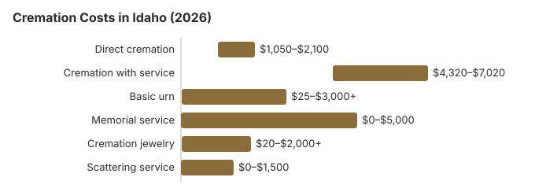

Cremation Costs in Idaho (2026)
Idaho has no cremation chapter of its own and no waiting period. What it does have is a set of separate rules that decide how a cremation goes. A county coroner has to sign off before any cremation. The law names who controls the remains, in order. And a funded prearranged plan binds the family. Direct cremation runs about $1,500 here and about $5,400 with a service first, and 65% of Idaho families now choose cremation. This page walks through those rules and what they cost.
Types of Cremation in Idaho
Direct Cremation
- The body goes from the place of death to the crematory once the coroner has signed
- No viewing or service beforehand, so the coroner’s authorization is usually the only wait
- The funeral home files the death report with the district registrar within 24 hours
- The ashes come back to whoever has the right to control the remains
- A memorial, scattering or veterans cemetery placement can follow at any time
Cremation with Service
- A viewing or funeral with the body present, followed by cremation
- Many Idaho funeral homes rent a casket for the service
- Embalming or refrigeration is needed while the body waits for the service
- The service date has to fit around the coroner’s sign-off
- Costs roughly $3,900 more than direct cremation on this site’s estimates
Idaho Cremation Prices by Item
| Item | Average Cost | Range |
|---|---|---|
| Direct cremation | $1,500 | $1,050 – $2,100 |
| Cremation with service | $5,400 | $4,320 – $7,020 |
| Basic urn | $50 – $300 | $25 – $3,000+ |
| Memorial service | $500 – $2,000 | $0 – $5,000 |
| Cremation jewelry | $50 – $500 | $20 – $2,000+ |
| Scattering service | $200 – $600 | $0 – $1,500 |
Methodology note: These figures are our estimates, not a survey of local providers, and they are not a quote or professional advice. See how we calculate them or read the full disclaimer.
State sources: Idaho Division of Occupational and Professional Licenses; Idaho Code § 31-3412.

Prearranged cremation plans in Idaho
Under § 54-1139, an Idaho resident can put cremation instructions in a prearranged funeral plan and sign the cremation authorization form personally, years ahead. The plan must actually be funded in advance. Under § 54-1140, those instructions must then be followed unless a compelling public interest makes it impossible. Survivors can still pay for their own memorial, as long as it does not conflict with the instructions (§ 54-1141).
The written contract has to name the seller and its certificate of authority number. It has to list the services and merchandise and the price. It must say whether the price is guaranteed, whether the trust is revocable, how much goes into trust, and who the trustee is (§ 54-1133). Read those lines before you sign. A revocable plan can be canceled before death for a refund of the payments plus interest, less reasonable trust expenses and taxes. An irrevocable plan cannot be canceled (§ 54-1135).
If the funeral home can no longer provide what the plan lists, it has to offer goods and services of similar style and at least equal quality. The person making the funeral arrangements chooses the substitutes, and the choice has to be reasonable by those standards. If the home cannot deliver at all, the family may move the trust money to another provider (§ 54-1137).
The coroner, permits and unclaimed remains in Idaho
In Idaho, the funeral home’s death report to the district registrar works as a permit for burial within the state, but not for cremation. Under Idaho Code § 39-268, the person who signs the death certificate authorizes final disposition on a state form. For a cremation the coroner must also give an additional authorization. If the person died in another state, that state’s permit covers transport and disposition in Idaho. A separate rule, § 54-1120, bars delivering a body to a crematory without the written consent of the person authorizing the cremation.
Idaho also protects the family’s choice of funeral home. Under § 54-1118, a hospital, public official or physician may not send a body to a mortician without first asking about the person’s plan or the wishes of whoever controls the remains.
If no one takes charge of a body within 14 days of death, the coroner arranges a burial or cremation, and the county pays what the estate cannot (§ 31-2802). When a county indigent application has been filed, the coroner may authorize cremation 10 days after death (§ 31-3412). Some ashes are never collected. If the family has made no arrangements a year after the death, Idaho’s Division of Veterans Services or an Idaho chapter of a chartered veterans organization can take the ashes of an eligible veteran for interment (§ 54-1144).
What the Idaho Board of Morticians rules require
The day-to-day rules for Idaho funeral homes and crematories are in IDAPA 24.08.01, the rules of the State Board of Morticians. If a body will be held more than 24 hours before cremation or burial, it must be embalmed or refrigerated at 36 degrees Fahrenheit or colder. That is one reason a family that waits a week for a service pays either an embalming fee or a daily refrigeration charge. The same rules repeat the coroner requirement: no body is cremated, whatever the cause of death, without the written authorization of the coroner of the county where the death occurred.
When a body arrives at an Idaho crematory, the operator must give a receipt to whoever delivers it. The receipt shows the name of the person who died, the date and place it was received, and the names and addresses of the funeral home and the person who brought the body. Both the funeral home and the crematory must keep a record of each cremation. It names the people who authorized it, includes an embalming report or a refrigeration log showing when the body went in and out of cold storage, gives the date of the cremation, and records who received the ashes, with that person’s signature and the date. A licensed mortician or funeral director signs the record, and the Board can inspect it at any reasonable time.
Two more rules matter to buyers. A funeral home that keeps a pre-need trust can charge a maintenance fee of no more than 10% of the trust’s annual interest. The Board can fine a licensee up to $1,000 for each violation of § 54-1116, and its rules require every licensee to follow the federal Funeral Rule. Idaho crematories also need retorts listed by an approved testing agency before they are licensed. Alkaline hydrolysis, where offered, is licensed under the same rules.
Who has the say over an Idaho cremation
If the person who died left no funded prearranged plan, Idaho Code § 54-1142 sets out who controls the remains, in order. First comes a person named in a signed, acknowledged document, or the person named on a service member’s DD Form 93. Next are a health care agent under a durable power of attorney for health care, then an agent under a general durable power of attorney if it expressly grants this power. A guardian or conservator follows. Only then come the surviving spouse, a majority of the adult children, the parents, the court-appointed or will-named personal representative, and finally the nearest heirs.
The adult children rule matters in large families. A minority of the children can direct the cremation, but only if they made reasonable efforts to tell the others and know of no objection from more than half of them. The same approach applies further down the list, to siblings and other relatives of the same degree.
Idaho also takes the decision away from anyone charged with first or second degree murder or voluntary manslaughter in connection with the death, once the funeral director or cemetery knows of the charge. If the charge is dropped or the person is acquitted, the right comes back. Whoever signs a cremation authorization vouches for the facts on it, including who died and the signer’s authority. The crematory is entitled to rely on that signature (§ 54-1143).
Checks to Make Before a Cremation in Idaho
Idaho leaves most of the details to the paperwork, so read what you sign and ask about these points first:
- Under Idaho Code § 54-1139, a person who funds a prearranged funeral plan can put cremation instructions in it and sign the cremation authorization form ahead of time. Anything the plan does not clearly cover falls back to the next-of-kin order in § 54-1142, and simply owning a burial plot does not count as a prearranged plan.
- You do not have to buy a casket for a direct cremation. Under the federal Funeral Rule an Idaho funeral home must offer an unfinished wood box or other alternative container, and it must list that container’s price on its General Price List.
- Ask how long the coroner in the county where the death happened usually takes to give the cremation authorization. Until it is signed, the cremation cannot go ahead, and any refrigeration or holding fee keeps running.
How to Save on Cremation in Idaho
In Idaho the cremation itself is not the main cost. Distance, the service and the paperwork are what move the price:
- Get prices from funeral homes in more than one town. Idaho’s population is spread out, and two homes 50 miles apart can quote very different direct cremation prices for the same thing.
- Account for transport distance: In rural Idaho, the nearest crematory may be 100+ miles from the funeral home. Some Idaho providers absorb this in the $1,500 base price; others charge mileage.
How Idaho Cremation Compares With the Region
Idaho’s $1,500 direct cremation estimate is the lowest of its six neighbors. Montana, Utah and Wyoming are about $1,600, Nevada about $1,800, Oregon about $1,900 and Washington about $2,100. At 65%, Idaho’s cremation rate matches Wyoming’s. It is well above Utah’s 42% but below Oregon, Washington, Montana and Nevada, which run from 72% to 78%. Families planning an outdoor memorial on a national forest or BLM land should check that office’s rules first. A scattering service runs $200 to $600 on the cost table above.
Cremation Resources
- Funeral Consumers AllianceNonprofit advocacy: compare cremation providers
- Cremation Jewelry GuideMemorial keepsakes and remembrance options
- Cremation vs. Burial CostsSide-by-side cost comparison
- Pet Cremation CostsOptions and prices for pet cremation and memorials
- Final Expense InsuranceCoverage options to help pay for cremation costs
Compare Funeral Costs
- Average Funeral Cost in 2026National cost breakdown with real prices
- Cremation vs. Burial Cost ComparisonSide-by-side price comparison to help you decide
- Funeral Cost BreakdownEvery line item explained: know what you're paying for
- Cheapest Funeral OptionsLower-cost alternatives, with typical price ranges
- Direct Cremation: Most Affordable OptionNFDA 2023 median $2,645 with a family-supplied container (latest available)
- How to Compare Funeral PricesStep-by-step guide to getting the best price
Frequently Asked Questions
What is the typical price of cremation in Idaho?
This site estimates about $1,500 for an Idaho direct cremation, usually between $1,050 and $2,100. Cremation with a funeral service first is about $5,400, usually $4,320 to $7,020. Extra mileage to a distant crematory, an urn, and a niche or veterans cemetery placement can be on top of either.
What types of cremation are available in Idaho?
Idaho funeral homes generally offer three types. Direct cremation, about $1,500, has no service beforehand. A memorial service can be held after the cremation, on any date. And traditional cremation, about $5,400, has a viewing and funeral with the body present before the cremation.
Does Idaho have specific rules for cremation?
Idaho sets no minimum waiting period, but the paperwork has its own steps. Under Idaho Code § 39-268, the mortician who first takes charge of the body reports to the district registrar within 24 hours, and whoever signs the death certificate authorizes final disposition. For a cremation, the coroner must also give an additional authorization, and the crematory still needs a signed authorization from the next of kin or designated agent. For the funeral-director question and who takes complaints, see the cremation rules and help section lower on this page.
Where are ashes allowed to be scattered in Idaho?
Idaho’s laws on disposition deal mainly with who authorizes a cremation and the permits for it, not with where the ashes go afterward. Get the landowner’s permission on private land. In a national park, follow the permit or designated-area rules under 36 CFR 2.62. Many Idaho families choose a columbarium niche, an urn burial or a veterans cemetery placement instead.
Why is cremation so popular in Idaho?
Cost is a big part of it. On this site’s estimates, cremation in Idaho costs about $5,200 less than a traditional burial. Idaho’s 65% cremation rate is 1.6 points above the 63.4% national rate NFDA projected for 2025. Long distances to cemeteries in rural counties, and the freedom to hold a memorial later, also push families toward cremation.
How quickly can cremation be completed in Idaho?
Idaho sets no minimum waiting period, so the timeline depends on paperwork, not a legal clock. The funeral home reports the death to the district registrar within 24 hours. The person who signs the death certificate authorizes disposition. Then the county coroner gives the extra cremation authorization (IDAPA 24.08.01.100; Idaho Code § 39-268). Direct cremation at $1,500 is quickest because there is no service to schedule.
Is it possible to have a ceremony before cremation in Idaho?
Yes. A viewing or funeral can come first, and many Idaho funeral homes rent a casket for it. The coroner’s cremation authorization can be obtained while the family plans the service, and the cremation follows afterward. If the person left a funded prearranged plan, the service has to fit within its instructions, though survivors may add a memorial at their own expense.
More for Idaho
How often an Idaho coroner signs off on cremation
Idaho coroners must review and approve every cremation of a death in their county, checking that the cause and manner of death are settled and that nothing more needs investigating. In Ada County, the state's most populous, that review is now routine: the coroner's 2025 annual report counts 3,840 cremation authorizations against 4,704 deaths countywide that year (Ada County Coroner 2025 Annual Report; checked October 29, 2026).
The same report notes that some authorization requests need further investigation before approval, so a cremation can wait on the coroner even when the family and funeral home are ready.
Cremation rules and help in Idaho
The licensing office for cremation providers in Idaho is the Idaho Division of Occupational and Professional Licenses; its number is 208-334-3233.
Idaho is not among the nine states the Funeral Consumers Alliance lists as requiring a funeral director, but no Idaho crematory will proceed without the death certificate, the cremation permit and the next of kin's signed authorization.
What the law says about timing: Idaho sets no waiting period, but the coroner of the county where the death occurred must give written authorization to cremate (IDAPA 24.08.01.100; Idaho Code § 39-268).
Idaho counties must provide an indigent cremation or burial under Idaho Code § 31-3412, and many, Canyon County among them, set a fixed cremation rate by resolution. (Source: Idaho Code § 31-3412.) Social Security's $255 lump sum is paid only to an eligible Idaho spouse or child, and only if claimed within two years of the death.
Cremated remains of an eligible Idaho veteran can be placed in a VA national cemetery columbarium or in-ground site at no charge for the space. Options in Idaho include Snake River Canyon National Cemetery (208-732-7499), Idaho State Veterans Cemetery at Blackfoot (208-701-7161), and Idaho State Veterans Cemetery at Boise (208-780-1340). See cem.va.gov.
Next steps for a cremation in Idaho
- Ask Idaho cremation providers to itemize transport, the container and the crematory fee before you choose one.
- Confirm who signs the Idaho cremation permit and when, so the memorial date is realistic.
- Ask the Idaho county what its negotiated cremation rate is before booking a crematory.
- A cremation provider that misstates its prices can be reported at 208-334-3233.